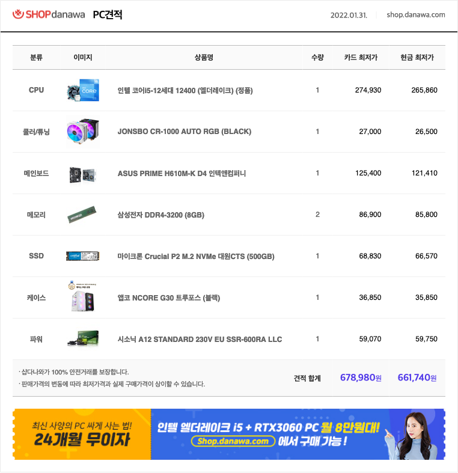

내가 컴퓨터가 필요한 이유는 윈도우 PC가 기본적으로 필요한 이유와 오래전 부터 하고 싶은 게임들이 하고 싶기 때문이다.
나에게 게임이란 유일하게 스트레스를 풀 수 있는 도구이다. 이 게임이란 것은 학생들에게 학업의 방해될 것이라는 의식이 많지만[그것도 틀린 말은 아니다.]
저자의 경우는 게임을 단순 스트레스를 풀기 위한 수단으로 학업의 오히려 도움이 될거라고 생각한다.
또한 집에서 사용 가능한 pc가 없음으로 지금 한번 사놓으면 사진 보관이나 그 외 각자 사용하는데 도움이 될 것 이다.
물론 현재 가격이 매우 비싸지만 저자는 전부터 말해 왔던것 처럼 그리 높은 사양을 원하지는 않아 가격이 너무 높게
측정될 것이라고는 생각하지 않는다.
전자 같이 사용할 것이다
조금 더 자세히 말하자면 그냥 저자가 사용 할 범위가 많을 것이고 가족끼리 많이 사용 할 것이다.
저자는 보통 음악 게임류를 많이 좋아하기 때문에 리듬게임을 메인으로 할 뜻 하다 보다 시피 총 게임은 별로 좋아하지 않아 고사양의 Pc는 필요하지 않다.
게임 이름을 정확하게 말한다면 [ DJMAX , MuseDash , Osu! , Maincraft , A Dance of Fire and Ice ] 정도를 할 것 같다.
견적서
현 앞에 보이는 견적서는 그래픽 카드와 윈도우 OS가 빠진 가격으로 이 둘을 추가 한다면 25만원 정도 더 추가 될 뜻 하다.
하지만 저자는 집에 있는 그래픽 카드를 사용하거나 집에 굴러다니는 컴퓨터 부품들을 중고로 판매하여 자금을 마련할 예정이다.
결론적으로 총 금액은 70~80 사이로 보이고 저자는 큰 걸 더 이상 바라지는
않고 가족 전체가 사용 할 것이니 6 : 4 로 하여서 PC 한대를 장만 하는 것 같나요 [향후 조정 가능]
향후 저자가 말레이시아에 갈 확율도 있기 때문에 왜 구매하냐는 말이 있겠지만 가기 전에 실 컷 질켜놔야지 좀 즐겁게 갈거 같고 또한 평소 리듬게임은 다 윈도우만 지원하여 맥으로 하지 못 한 이 슬픔을 아신다면. 가슴이 아파 오실 겁니다. 결론적으로 지원해 주시죠.
이렇게 싹싹 빕니다 자랑스러운 아버지, 어머님 요즘 이 저자도 힘듭니다. 이미 많은 것들을 배풀어 주셨지만 이 못된 저자는 욕심이 많아 어쩔 수 없는 것 같습니다. 잘 부탁드립니다. 사랑합니돠!
결정 되시면 카톡으로 보내주세요 \^^/
기대 하고 있어요.,,,!